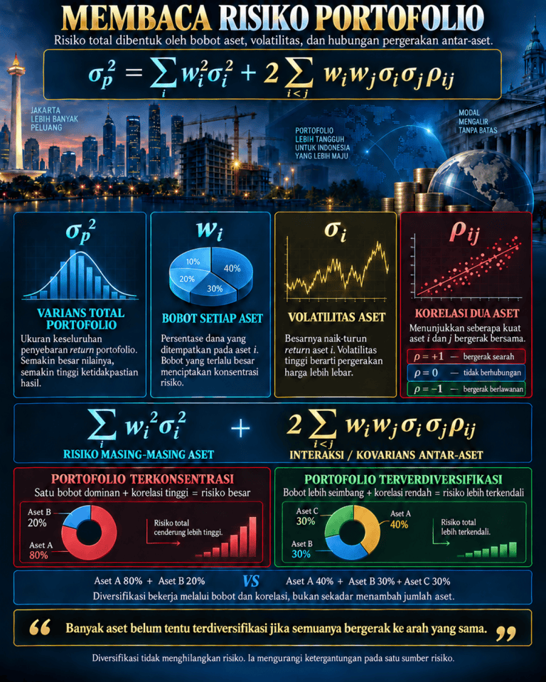

Hujan menderas di kawasan Dago Atas, menyisakan kabut tipis yang menempel di kaca-kaca jendela sebuah kafe berdesain industrial minimalis. Aroma petrikor berpadu dengan wangi kopi arabika yang diseduh melalui metode V60, menciptakan atmosfer yang ironisnya sangat kontras dengan diskusi berat yang sedang berlangsung di meja sudut. Di meja bundar berbahan kayu jati itu, empat orang profesional muda yang semuanya merupakan alumni Teknik Industri dari sebuah kampus teknik ternama di Bandung tengah berkumpul. Mereka bukan sekadar teman nongkrong biasa; mereka adalah produk dari sistem pendidikan yang mendewakan optimasi, efisiensi, dan manajemen risiko.
Alya, satu-satunya wanita di meja itu, duduk bersandar sambil menyesap perlahan chamomile tea miliknya. Sorot matanya tajam, khas seorang analis risiko kuantitatif di sebuah firma investasi terkemuka di Jakarta yang sedang pulang kampung ke Bandung untuk akhir pekan. Di hadapannya, Dimas, seorang pengusaha muda yang ambisius dengan kemeja flanel yang digulung hingga siku, sedang membeberkan rencana ekspansi bisnisnya dengan penuh semangat. Di sebelah Dimas, Bima, seorang manajer supply chain yang pragmatis, mendengarkan sambil mengangguk-angguk kecil, sementara Caka, seorang data scientist yang terobsesi dengan algoritma, asyik mengetuk-ngetukkan jarinya di atas meja mengikuti irama lagu lo-fi yang diputar kafe.
"Jadi begini," Dimas membuka percakapan, suaranya sedikit bersaing dengan derai hujan di luar. "Gue berencana membagi modal investasi perusahaan gue ke dalam dua sektor utama. Delapan puluh persen akan gue suntikkan ke startup logistik pengiriman barang, dan dua puluh persen sisanya ke platform e-commerce yang sedang naik daun. Gue pikir ini adalah langkah diversifikasi yang solid. Kalau logistik lagi lesu, e-commerce bisa menopang, begitu juga sebaliknya."
Alya meletakkan cangkirnya. Senyum tipis, nyaris sinis, terbentuk di bibirnya. Sebagai seorang analis, ia tahu betul jebakan pemikiran seperti itu. Ia menatap Dimas dengan pandangan mengasihani yang terukur.
"Diversifikasi yang solid, kata lu, Dim?" tanya Alya dengan nada menantang yang lembut. "Lu sadar nggak kalau lu baru aja mendeskripsikan apa yang kita sebut di industri keuangan sebagai portofolio yang sangat terkonsentrasi? Lu bukan sedang mendiversifikasi risiko, lu cuma sedang membaginya ke dalam dua keranjang yang dibawa oleh orang yang sama di atas jembatan yang rapuh."
Dimas mengerutkan dahi, merasa strateginya diremehkan. "Maksud lu apa, Al? Bukannya teori dasar investasi bilang 'jangan taruh semua telurmu dalam satu keranjang'? Gue udah bikin dua keranjang nih. Satu logistik, satu e-commerce."
Bima menyela sambil tertawa kecil, "Keranjangnya emang dua, Dim. Tapi pertanyaannya, apakah kedua keranjang itu ditaruh di gerobak yang sama? Kalau gerobaknya terguling, ya telur di kedua keranjang lu pecah semua." Bima, dengan latar belakang rantai pasoknya, memahami betul bahwa logistik dan e-commerce adalah dua entitas yang saling bergantung satu sama lain secara absolut.
Alya mengangguk setuju dengan analogi Bima. Ia kemudian merogoh tasnya, mengeluarkan sebuah tablet pintar, dan membuka sebuah berkas gambar yang sering ia gunakan untuk presentasi di hadapan klien-klien kakap. Ia meletakkan tablet tersebut di tengah meja agar semua orang bisa melihatnya.

"Coba kalian perhatikan gambar ini," ujar Alya, jarinya menunjuk ke bagian atas layar yang bertuliskan MEMBACA RISIKO PORTOFOLIO. "Risiko total dari sebuah portofolio itu tidak hanya dibentuk oleh bobot aset dan volatilitas masing-masing aset, tapi ada satu faktor krusial yang sering dilupakan oleh investor pemula: hubungan pergerakan antar-aset, atau korelasi."
Caka, yang sedari tadi diam, tiba-tiba matanya berbinar melihat persamaan matematika yang terpampang gagah di gambar tersebut. Sebagai data scientist, melihat rumus bagaikan melihat oase di padang pasir. Ia langsung mengambil selembar serbet kafe dan sebuah pena dari saku kemejanya.
"Ah, Teori Portofolio Modern dari Harry Markowitz," gumam Caka sambil menulis ulang persamaan tersebut di atas serbet. "Mari kita bedah secara matematis, Dim. Supaya otak teknik industri lu yang udah karatan karena terlalu banyak pitching bisnis itu kembali bekerja."
Alya tersenyum puas melihat Caka mengambil alih penjelasan teknis. Caka menuliskan rumus varians total portofolio dengan sangat rapi, persis seperti yang tertulis di layar tablet Alya.
"Lihat ini, Dim," Caka menunjuk simbol \(\sigma_p^2\). "Ini adalah varians total portofolio lu. Ukuran keseluruhan dari penyebaran kemungkinan return. Semakin besar nilai ini, semakin tinggi ketidakpastian yang lu hadapi. Risiko lu makin gila."
Dimas menatap rumus itu dengan saksama. Masa-masa kuliah Kalkulus dan Statistika Industri tiba-tiba terbayang kembali di benaknya. "Oke, gue masih ingat sedikit. Simbol \(w\) itu bobot kan? Persentase dana yang gue masukkan?"
"Tepat," jawab Alya. "Di kasus lu, \(w_A\) untuk logistik adalah delapan puluh persen atau 0.8, dan \(w_B\) untuk e-commerce adalah dua puluh persen atau 0.2. Seperti yang dibilang di infografis ini, bobot yang terlalu besar pada satu aset menciptakan konsentrasi risiko. Lu menaruh 80% di logistik, itu udah bendera merah pertama."
Bima menunjuk simbol \(\sigma_i\) pada serbet Caka. "Dan ini volatilitas masing-masing aset, kan? Seberapa liar harga atau valuasi mereka naik-turun. Startup teknologi biasanya punya volatilitas yang tinggi."
"Benar, Bim," sahut Caka. "Tapi bagian yang paling mematikan dari rencana Dimas bukan di bobot atau volatilitas individualnya. Kiamatnya ada di suku kedua dari persamaan ini." Caka melingkari bagian \( 2 \sum_{i "Interaksi antar-aset. Kovarians," ucap Alya dengan nada serius. "Dim, variabel \(\rho_{ij}\) (rho) ini merepresentasikan korelasi antara aset \(i\) dan aset \(j\). Nilainya bergerak dari minus satu hingga plus satu. Coba lu pikir pakai logika sistem yang lu pelajari di kampus. Apa yang terjadi pada sektor logistik kalau sektor e-commerce sedang hancur lebur karena krisis daya beli?" Dimas terdiam sejenak. Matanya menerawang, membayangkan simulasi bisnis di kepalanya. "Ya... pesanan online turun drastis. Kalau pesanan turun, otomatis pengiriman barang juga anjlok. Pemasukan logistik gue bakal nyungsep." "Nah!" Caka menjentikkan jarinya. "Itu artinya, logistik dan e-commerce bergerak searah. Ketika satu naik, yang lain naik. Ketika satu hancur, yang lain ikut hancur. Dalam bahasa statistik, korelasi \(\rho\) antara keduanya mendekati +1." Alya mengambil alih tabletnya, memperbesar bagian kotak merah di infografis yang menjelaskan tentang korelasi. "Kalau korelasi lu +1, maka suku kedua dari persamaan varians portofolio akan sangat besar. Hasilnya? Risiko total (\(\sigma_p^2\)) portofolio lu tidak berkurang sama sekali. Alih-alih mendiversifikasi risiko, lu justru mengamplifikasinya. Portofolio lu ini masuk kategori Portofolio Terkonsentrasi: satu bobot dominan ditambah korelasi tinggi sama dengan risiko masif." Udara di kafe itu terasa sedikit lebih dingin, atau mungkin itu hanya perasaan Dimas yang mulai menyadari kelemahan fatal dalam rencana bisnisnya. Ia menyandarkan punggungnya ke kursi, mengusap wajahnya dengan kedua tangan. Kepercayaan dirinya yang menggebu-gebu beberapa menit lalu kini luntur oleh argumen matematis yang tak terbantahkan dari teman-temannya. "Jadi, apa yang seharusnya gue lakuin?" tanya Dimas, nada suaranya kini lebih merendah, memposisikan dirinya sebagai murid yang siap mendengarkan dosen. Bima tersenyum, memesan secangkir kopi hitam lagi kepada pelayan yang lewat, lalu berkata, "Konsep dasar teknik industri: optimasi sistem. Lu harus mencari komponen yang tidak memiliki ketergantungan linier yang sama terhadap gangguan eksternal. Kalau lu mau portofolio yang tangguh, lu harus membangun Portofolio Terverdiversifikasi." Alya menggeser layar tabletnya ke bagian kanan bawah infografis. "Lihat perbandingannya, Dim. Daripada membagi 80-20 ke aset yang berkorelasi tinggi, coba bagi bobotnya menjadi lebih seimbang dan cari aset yang korelasinya rendah atau bahkan negatif (\(\rho = -1\) atau mendekati \(0\)). Misalnya, Aset A 40%, Aset B 30%, dan Aset C 30%." "Contoh realnya gimana, Al?" desak Dimas. "Misalnya, selain e-commerce, lu investasi di sektor yang kebal terhadap resesi konsumtif. Contoh, infrastruktur utilitas dasar, pengelolaan limbah, atau komoditas pertahanan. Ketika daya beli masyarakat turun (e-commerce hancur), orang tetap butuh air bersih, listrik, dan membuang sampah. Korelasi antara e-commerce dan utilitas sangat rendah. Dengan begitu, interaksi kovarians di rumus Caka tadi akan bernilai kecil atau bahkan mengurangkan varians total. Risiko total lu jadi lebih terkendali." Caka menambahkan, "Diversifikasi itu bekerja melalui bobot dan korelasi, Dim, bukan sekadar menambah jumlah startup yang lu suntik dana. Lu punya seratus perusahaan di portofolio lu pun percuma kalau semuanya bergerak di sektor digital ekonomi yang rentan terhadap suku bunga The Fed. Itu namanya kebodohan yang diagregasi." Kata-kata tajam Caka membuat Dimas tertawa getir. "Sialan lu, Cak. Tapi lu bener." Alya menutup tabletnya, membiarkan layar itu menampilkan sebuah kutipan yang menjadi penutup sempurna untuk diskusi malam itu. Kutipan tersebut dicetak dengan gaya editorial yang elegan di layar tabletnya. "Ingat, Dim," Alya mengunci pandangannya dengan Dimas, nadanya melembut namun tetap berwibawa. "Diversifikasi tidak menghilangkan risiko secara absolut. Ia hanya mengurangi ketergantungan pada satu sumber risiko. Sebagai engineer, tugas kita bukan mencari sistem tanpa risiko, karena itu mustahil. Tugas kita adalah mendesain sistem yang bisa bertahan hidup saat risiko terburuk itu terjadi." Hujan di luar mulai mereda, menyisakan rintik-rintik kecil yang berirama harmonis di atas atap kafe. Cahaya lampu kota Bandung mulai menyala satu per satu, menembus kaca jendela yang berembun, menciptakan siluet jingga yang hangat. Dimas menatap ketiga temannya. Ada rasa syukur yang mendalam di dadanya. Gelar Sarjana Teknik yang melekat di nama mereka bukan sekadar pajangan, melainkan sebuah pola pikir rasional yang menyelamatkannya dari jurang kebangkrutan finansial. "Gue berutang banyak sama kalian malam ini," ucap Dimas tulus, mengangkat gelas air mineralnya. "Untuk varians, korelasi, dan persahabatan yang nggak pernah terdepresiasi." Alya, Bima, dan Caka ikut mengangkat cangkir dan gelas mereka, mendentingkannya di tengah meja kayu tersebut. "Untuk Teknik Industri ITB," sahut Bima, yang disambut tawa lepas dari mereka berempat. Malam itu, di bawah langit Bandung yang basah, sebuah keputusan investasi yang bernilai miliaran rupiah berhasil diselamatkan oleh selembar serbet kertas, secangkir chamomile, dan pemahaman yang mendalam tentang rumus matematika yang mengatur kekacauan dunia maya dan nyata.